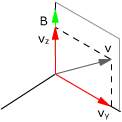
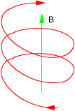

Trayectoria de una carga dentro de campo magnético
La partícula recorrerá una circunferencia en un plano perpendicular al campo magnético
Dinámica:
$$q\,v\,B=m\,\frac{v^2}{R}\;\rightarrow\;q\,B=m\,\frac{v}{R}$$
Cinématica circular uniforme:
$$v=\omega\,R\;\rightarrow\;v=\frac{2\pi}{T}\,R$$

Se desdobla la velocidad en dos componentes: paralela (vz) y normal (vy) al campo magnético
La velocidad paralela al campo no cambia porque no hay fuerza en su dirección (uv x uB = 0)
La velocidad normal al campo sí sufre la fuerza de Lorentz. La partícula recorrerá una circunferencia en el plano xy
La combinación de un movimiento circular en el plano xy con un avance según el eje z produce una trayectoria helicoidal

Si la velocidad es paralela o antiparalela al campo la fuerza de Lorentz es cero y la trayectoria es rectilínea